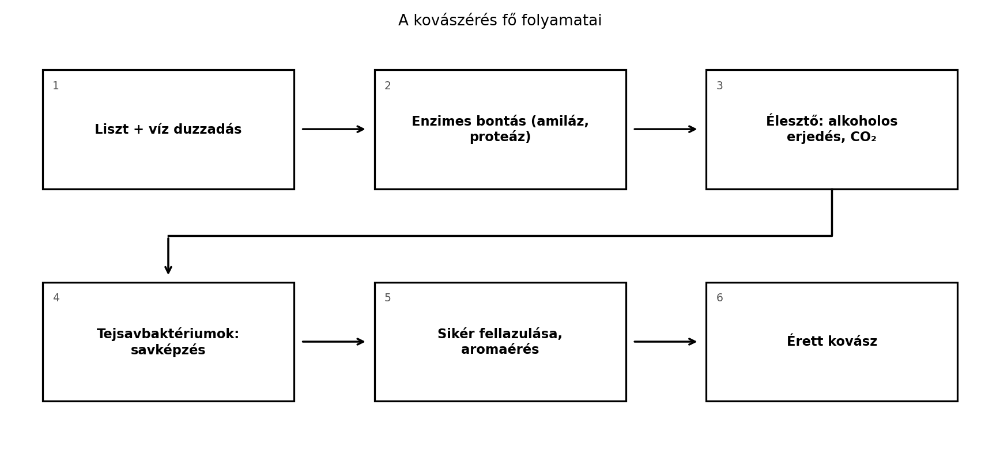

Hajnali öt óra van a pékségben. A pék megemeli a kovászos edény fedelét, és csak nézi: a kovász duplájára nőtt, a felülete enyhén domború, és savanykás, almaborra emlékeztető illata van. Ha most bedagasztja, a kenyér jól megkel, a héja szép lesz, a bélszerkezete pedig egyenletes. Ha viszont kivár még két órát, a kovász túlérik, összeesik, és a belőle készült tészta ragacsos, savanyú, nehezen kezelhető lesz. Ebben az alfejezetben azt tanuljuk meg, mi zajlik a kovászban az érés során, és milyen jelekből állapítjuk meg, hogy a kovász éppen jó állapotban van.
A kovászérés nem egyetlen reakció, hanem egymásra épülő enzimes, mikrobiológiai és kolloidális folyamatok sora. A liszt és a víz összekeverése után először a liszt enzimjei kezdenek dolgozni, majd beindul az élesztő alkoholos erjedése és a tejsavbaktériumok savképzése, végül a tészta kolloid szerkezete is átalakul.

A folyamatábra azt mutatja, hogy a kovász érését a duzzadás indítja, az enzimek előkészítik a tápanyagokat, a mikrobák erjesztenek, a sav pedig fellazítja a sikérszerkezetet. A lépések a valóságban átfedik egymást, de a tanulás szempontjából így áttekinthető.
Definíció. A kovászérés az a folyamat, amelyben a liszt és víz keverékében a liszt enzimjei, az élesztőgombák és a tejsavbaktériumok együttesen dolgoznak, miközben a tészta kolloid szerkezete megváltozik, és kialakulnak az érett kovászra jellemző savanyú íz, illat, térfogat és lazított állomány.
A kovászérés során négy fő folyamatcsoportot különböztetünk meg:
Ezek a folyamatok a kovász hőmérsékletétől, a liszt fajtájától, a kovász nagyságától és a víz mennyiségétől függenek. A péknek ezeket kell kézben tartania, hogy a kovász éppen akkor legyen érett, amikor a tésztához adják.
A lisztben természetesen jelen lévő enzimek közül a kovászérés szempontjából kettő a legfontosabb: az amiláz és a proteáz.
Az amiláz a keményítőt bontja. A keményítő hosszú glükózláncokból áll, amelyeket az amiláz előbb kisebb egységekre, úgynevezett dextrinekre, majd maltózra bont. A maltóz kettős cukor, amelyet a mikrobák tovább tudnak hasznosítani. Ez azért lényeges, mert az élesztőgombák a keményítőt közvetlenül nem tudják erjeszteni, a maltózt viszont igen. Az amiláz tehát előkészíti a tápanyagot az élesztő és a tejsavbaktériumok számára.
A proteáz a liszt fehérjéit, elsősorban a sikért alkotó gluténfehérjéket bontja kisebb peptidekre és aminosavakra. Ez a bontás fellazítja a sikérvázat, puhábbá és nyújthatóbbá teszi a kovászt. A felszabaduló aminosavak pedig ízanyagok és aromaanyagok kiindulópontjai, valamint a tejsavbaktériumok számára is tápanyagot jelentenek.
Szabály. Az enzimes bontás sebessége a hőmérséklettől és a pH-tól függ. Az amiláz és a proteáz aktivitása a kovász hőmérsékletén, körülbelül 20–35 °C között fokozatosan nő, de a túl magas hőmérséklet károsíthatja az enzimeket; a túl alacsony hőmérséklet pedig nagyon lelassítja a bontást. (ellenőrizendő: az adott liszt enzimaktivitása és az üzemi kovászparaméterek)
A kovászban az élesztőgombák – a sütőélesztő és a liszt természetes mikroflórájából származó vadélesztők – a felszabadult cukrokat alkoholos erjedéssel hasznosítják. Az erjedés egyszerűsített egyenlete:
Az egyenlet azt mutatja, hogy egy molekula glükózból két molekula etil-alkohol és két molekula szén-dioxid keletkezik. A szén-dioxid gáz buborékokat képez a kovászban, ezért a kovász térfogata nő, állománya lazul. Az alkohol egy része a kovászban marad, és hozzájárul az aromához, másik része a dagasztás és a sütés során elpárolog.
Megjegyzés. Az alkoholos erjedés akkor indul be igazán, ha az élesztő és a baktériumok már felszaporodtak, és elegendő egyszerű cukor van jelen. A gyakorlatban ezért az érett kovászban enyhe, kellemesen szeszes illat érezhető, de nem szabad élesztőszagúnak lennie.
A kovász legfontosabb baktériumai a tejsavbaktériumok. Két fő csoportjukat különböztetjük meg:
Mindkét csoport savanyítja a kovászt, így csökkenti annak pH-ját. A savas közeg kedvezőtlen a rothasztó baktériumok és a penészgombák számára, ezért az érett kovászban a nemkívánatos mikrobák visszaszorulnak. A tejsav és az ecetsav emellett a kenyér jellegzetes, enyhén savanyú ízét és illatát adja.
Definíció. A pH a közeg savasságát kifejező, logaritmikus skálán mért érték: minél kisebb a pH, annál savanyúbb a közeg. A savfok (SF) ezzel szemben a minta összes savtartalmát jellemzi; a pontos mérését a Hamutartalom, savfok és sótartalom alfejezetben tanuljuk meg.
A gyakorlatban a kovász érettségét a pH és a savfok együtt jellemzi. A pH a pillanatnyi savasságot mutatja, míg a savfok a pufferkapacitást is tükrözi: az érett kovászban a savak egy része pufferelt formában van jelen, ezért a savfok növekedhet akkor is, ha a pH már csak lassan csökken. Tanulási példaként egy búzakovász érettségét 4,0–4,5 pH és 8–12 savfok között szokás megadni (ellenőrizendő: az üzemi kovász technológiai előírása). A rozskovász savfoka általában magasabb lehet, mert a rozsban több puffervegyület van.
Amikor a lisztet vízzel keverjük, a keményítőszemcsék és a fehérjék vizet vesznek fel, azaz duzzadnak. A duzzadás során a keményítőszemcsék megpuhulnak, a sikérfehérjék pedig összekapcsolódva egy rugalmas hálót alkotnak. Ez a háló tartja meg a kovászban keletkező gázbuborékokat.
Az érlelés során a proteáz enzim folyamatosan bontja a sikérvázat. Ezzel párhuzamosan a tejsavbaktériumok által termelt savak csökkentik a pH-t, ami szintén lazítja a sikérszerkezetet. A kovász ezért az érés előrehaladtával egyre puhább, nyújthatóbb, és egyre jobban képes a gázokat megtartani. Ha azonban túl sokáig érik, a sikér túlságosan lebomlik, a kovász összeesik, ragacsossá, kenőssé válik.
Szabály. A kolloidális érés akkor optimális, ha a gázképződés és a gázmegtartó képesség egyensúlyban van. Az érett kovász enyhén domború, szivacsos, és a felülete nem szakad be. A túlérett kovász lapos, szúrós savanyú szagú, és az ujjunkkal benyomva nem ugrik vissza.
Az erjedés során a kovász tömege csökken. Ennek oka, hogy a szén-dioxid gáz egy része eltávozik a kovászból, vízgőz párolog, és kis mennyiségű illékony anyag is távozik. Ezt a tömegcsökkenést erjedési veszteségnek nevezzük.
Definíció. Az erjedési veszteség () a kovász tömegének százalékos csökkenése az érés során:
A képletben a frissen bekevert kovász tömege, pedig az érett kovász tömege. Az erjedési veszteséget mindig a kiindulási tömegre vetítjük, nem a lisztre. Ez a mutató a tésztahozam-számításoknál is szerepel, de ott a teljes tészta erjedésére vonatkozik: a részletes tárgyalást a Tésztahozam, termékhozam, kihozatal és veszteségek alfejezetben találjuk.
Számítás. Tegyük fel, hogy egy kovászt 10,000 kg tömeggel keverünk be. Az érés végén a kovász tömege 9,850 kg. Az erjedési veszteség:
Tehát a kovász az érés alatt 1,5%-os tömegveszteséget szenvedett. Ez a példa tanulási példa; üzemi kovásznál az erjedési veszteség jellemzően 0,5–2% között mozoghat (ellenőrizendő: az adott kovász vezetési technológiája).
Figyelem. Az erjedési veszteség nem csak a kovásznál jelentkezik. A tészta erjedésekor és kelesztésekor is van tömegveszteség, ezért a feladási tömeg számításánál a késztermék tömegéhez hozzá kell adni az erjedési, sütési és hűlési veszteséget. Ezt a gondolatot visszük tovább a Feladási tömeg, préstömeg és osztási számítások alfejezetbe.
A pék a kovász érettségét leggyakrabban érzékszervileg állapítja meg: megnézi, megszagolja, és az ujjával benyomja a felületét.
Az érett kovász jellemzői:
A túlérett kovász jelei:
A fiatal kovász ezzel szemben még kevésbé savanyú, az illata lisztes, az állománya tömör, a térfogata alig nőtt. A fiatal kovászból készült kenyér lapos lesz, a héja halvány, a bélzete tömör, mert még nem alakult ki a megfelelő gázképződés és savtermelés.
A három állapotot a következő rajz hasonlítja össze. Felül az edény oldalról: a szaggatott vonal a kiinduló szint, így a térfogat-növekedés közvetlenül leolvasható; a túlérett kovásznál a falon maradt csík (3) mutatja, milyen magasra nőtt, mielőtt összeesett. Középen a felület felülről (buborékok, repedezés), alul az ujjpróba és az illat.
Az érzékszervi jeleket mindig együtt értékeld: egyetlen jel (például csak a térfogat) félrevezethet, ha a kovász hőmérséklete vagy TA-ja eltért a szokásostól. Az érési állapotok időbeli lefutását a következő szemléltető görbe mutatja: a térfogat az érett ablakban (itt 7–11 óra) éri el az 1,5–2-szerest, közben a pH 6 körüliről 4,0–4,5 felé csökken; a túlérett szakaszban a térfogat már csökken, a pH alig változik.
A görbe időtengelye a hőmérséklettől, a kovásznagyságtól és a TA-tól függ: melegebb kovász hamarabb, hidegebb később érik be. Ezt a HTML-változatban a kovászhőmérséklet csúszkájával kipróbálhatod – így érthető a 6. feladat helyzete is, amikor a kovász 2 órával korábban érett meg.
A kovász érettségét az érzékszervi vizsgálat mellett mérni is lehet. A leggyakoribb mérések:
Megjegyzés. A pH és a savfok együttes értelmezése fontos. Ha a pH már nem csökken, de a savfok még nő, az azt jelzi, hogy a kovász pufferkapacitása növekszik, és a savak egy része pufferelt formában raktározódik. Ez befolyásolja a tészta későbbi savasságát és a kenyér ízét.
Higiénia. A kovász edénye legyen tiszta, lehetőleg élelmiszeripari műanyagból vagy rozsdamentes acélból. A kovászt minden nap ugyanabban az edényben vezetjük, és tiszta eszközökkel dolgozunk. A kovász környékén ne legyen nyers hús, tojás vagy más szennyező anyag. A pék keze legyen tiszta, mert a kovászba kerülő kórokozók – például a Staphylococcus aureus – túlélhetik az érési időt, ha a savképződés lassú.
HACCP. A kovászérés során a legfontosabb veszély a nemkívánatos mikrobák elszaporodása, ha a savképződés nem indul be időben. A megelőzés alapja a tiszta edény, az egészséges starter, a megfelelő hőmérséklet és az érési idő ellenőrzése. Tanulási példa egy 8–12 órás, 24–28 °C-on vezetett búzakovászra: maghőmérséklet 24–28 °C, vég-pH 4,5 alatt, savfok 8 felett. A határértékeket minden kovásztípusra külön, a technológiai lapon rögzítik (ellenőrizendő: a pékség HACCP-terve); a rozskovász (A kovászolás célja és a kovász technológiai mutatói, Péksütemény-kovászok és előtészták, a rozskovász gyakorlata) más hőmérsékleten és hosszabb ideig érik. Ha az adott kovász nem éri el a lapon előírt értékeket, az jelezheti, hogy a starter legyengült, vagy a hőmérséklet nem megfelelő; ilyenkor a kovászt nem szabad bedagasztani, hanem frissíteni kell. A sütés a Staphylococcus aureus sejtjeit elpusztítja, de a hőstabil enterotoxin megmaradhat, ezért lényeges a gyors savanyodás és a kézhigiénia.
Allergén. A kovász lisztje glutént tartalmazó gabonából (búza, rozs stb.) készül. A glutént tartalmazó gabonák az 1169/2011/EU rendelet II. melléklete szerint jelölésköteles allergének (ellenőrizendő: hatályos szöveg). Ha a pékség gluténmentes terméket is gyárt, a kovászos edényt, a mérőeszközöket és a munkaasztalt külön kell tartani, mert a lisztpor keresztszennyeződést okozhat. A jelölésben az összetevők között a ténylegesen felhasznált gabona nevét kell kiemelni (pl. búzaliszt, rozsliszt) az 1169/2011/EU II. melléklete szerint (ellenőrizendő: hatályos szöveg).
Gépbiztonság. Ha a kovászt dagasztógéppel vagy keverőgéppel készítjük, a gépet csak betanítás után, felügyelettel szabad kezelni. A kovász levételéhez a gépet le kell állítani, áramtalanítani, és meg kell várni, amíg a dagasztókar teljesen megáll. Tilos a futó gépbe nyúlni.
Egy kis pékségben a pék észrevette, hogy a búzakenyér héja rendszeresen halvány, a bélzete tömör, és a kenyérnek alig van savanykás íze. A kovász érzékszervi vizsgálatakor kiderült, hogy a kovász alig nőtt, a felülete lapos, az illata lisztes. A pH-t megmérve 5,2 értéket kapott, a savfok pedig 5 alatt volt. A hiba oka az volt, hogy a kovászt túl alacsony hőmérsékleten, hűvös kamrában érlelték, ezért az élesztő és a tejsavbaktériumok túl lassan szaporodtak. A megoldás az volt, hogy a kovászt 26 °C körüli helyiségbe tették, és az érési időt 8 óráról 10 órára növelték. A következő sütésnél a kovász pH-ja 4,2, savfoka 9 lett, és a kenyér héja szép piros, a bélzete laza, az íze enyhén savanykás lett. Ez az eset mutatja, hogy az érettség megállapítása nélkül a kovász hibája a késztermék hibájává válik.
Cél. A kovász érettségének felismerése érzékszervi és gyors mérési módszerekkel, hogy a tésztához csak megfelelő állapotú kovászt adjunk.
Eszközök és anyagok. Kovászminta, tiszta kanál vagy spatula, pH-mérő vagy indikátorpapír, jegyzőlap, toll.
Higiénia. A művelet előtt mossunk kezet, viseljünk tiszta munkaruhát és hajhálót. Ékszer ne legyen rajtunk. Ha az üzemi szabály megengedi a kóstolást, tiszta, csak egyszer használatos kanalat használjunk. A kovászból vett minta ne szennyezze vissza a kovászt.
Lépések.
Ellenőrzési pontok. Az érett kovásznál a térfogat növekedése legalább 1,5-szeres, a pH 4,5 alatt van, a felület nem esik be, az illat kellemesen savanyú. Ha a kovász fiatal, az illata lisztes, a pH magas, a térfogat alig nőtt. Ha túlérett, a felület összeesett, a szaga szúrós, a pH nagyon alacsony lehet, de a kovász már nem tartja meg a gázokat.
Tipikus hibák. Gyakori hiba, hogy a pék csak az időre hagyatkozik, és nem nézi meg a kovászt. Az érési idő a lisztfajtától, a hőmérséklettől és a kovász mennyiségétől függ, ezért az óra szerinti idő nem elég. Másik hiba, hogy a pék a kovász savanyú szagát automatikusan érettségnek tekinti, pedig a szúrós szag túlérettséget jelezhet. Harmadik hiba, hogy a kovászt a tésztához adás előtt nem keveri át, így a minta nem reprezentatív.
Dokumentálás. A kovászvezetés során vezessünk naplót, amelyben szerepel a frissítés ideje, a hőmérséklet, az érési idő, a pH, a savfok és az érzékszervi megfigyelés. Ez a későbbi hibakeresés alapja.
A kovász érettségének minőségi jellemzői:
A nem megfelelő kovász jellemzője a lapos, tömör állomány, a lisztes illat (fiatal), vagy a folyós, összeesett, szúrós szagú állapot (túlérett).
1. feladat (A) Határozd meg, mit jelent a kovászérés, és sorold fel a négy fő folyamatcsoportját.
2. feladat (A) Egészítsd ki a mondatot: Az élesztőgombák a cukrokból … és … termelnek, a homofermentatív tejsavbaktériumok pedig főleg … termelnek.
3. feladat (B) Egy rozskovász pH-ja 4,1, a savfoka 14. Egy búzakovász pH-ja 4,3, a savfoka 9. Melyik kovász savassága nagyobb, és miért? Magyarázd meg a két mérőszám szerepét.
4. feladat (B) Egy kovászt 12,500 kg tömeggel keverünk be. Az érés során 0,180 kg tömegveszteséget mérünk. Számítsd ki az erjedési veszteséget százalékban.
5. feladat (C) A pék szerint a kovász érett, mert letelt a 10 óra. A kovász pH-ja 5,0, a felülete alig nőtt, az illata lisztes. Mi a baj? Mit kell tenni?
6. feladat (D) Tegyük fel, hogy a reggeli műszakban a kovász 2 órával korábban érett meg, mint ahogy a tésztát dagasztják. A pék mégis felhasználja. Milyen termékhibát várhatunk? Hogyan lehetett volna elkerülni?
Önellenőrzés – válaszok
1. feladat megoldása. A kovászérés az a folyamat, amelyben a liszt enzimjei, az élesztőgombák és a tejsavbaktériumok együttes hatására a kovász savanyúvá, lazítottá és aromássá válik. A négy folyamatcsoport: enzimes bontás, alkoholos erjedés, tejsavas erjedés, kolloidális folyamatok.
2. feladat megoldása. Az élesztőgombák a cukrokból etil-alkoholt és szén-dioxidot termelnek, a homofermentatív tejsavbaktériumok pedig főleg tejsavat termelnek.
3. feladat megoldása. A rozskovász savfoka magasabb (14), mint a búzakovászé (9), ezért a rozskovászban több sav, illetve puffervegyület van. A pH közel azonos (4,1 és 4,3), de a savfok különbsége azt jelzi, hogy a rozskovász savtartalma nagyobb, és a tésztában erősebb savanyító hatást fejt ki. A pH a pillanatnyi savasság, a savfok az összes savtartalom; együtt jellemzik a kovász érettségét.
4. feladat megoldása. Adott: , . Az érés utáni tömeg: . Képlet: . Ellenőrzés: 12,500 kg 1%-a 0,125 kg, 1,44% ennél kicsit több, tehát a 0,180 kg reális.
5. feladat megoldása. A kovász fiatal, nem érett. A pH 5,0 túl magas, a lisztes illat és a kis térfogat azt mutatja, hogy az élesztő és a baktériumok nem szaporodtak fel kellően. A tésztát még nem szabad bedagasztani; a kovászt tovább kell érlelni, vagy melegebb helyre tenni, és rendszeres pH-ellenőrzés mellett várni az érettség jeleit.
6. feladat megoldása. Ha a kovász 2 órával korábban érett meg, és a pék így használja fel, akkor az már a felhasználáskor túlérett lehet. Várható termékhiba: ragacsos, nehezen formázható tészta, savanyú kenyér, egyenetlen bélzet, esetleg összeesett forma. Elkerülni úgy lehetett volna, hogy a kovász hőmérsékletét csökkentik, vagy későbbre időzítik a dagasztást, illetve a kovászból kevesebbet adnak a tésztához, és friss liszttel korrigálnak.
A kovászérés során a liszt enzimjei (amiláz, proteáz) bontják a keményítőt és a fehérjét, az élesztőgombák alkoholos erjedéssel szén-dioxidot és etil-alkoholt termelnek, a tejsavbaktériumok pedig tejsavat, illetve heterofermentatív fajok ecetsavat is képeznek. A sav csökkenti a pH-t, gátolja a káros mikrobákat, és fellazítja a sikérvázat. A kolloidális folyamatok közben a keményítő és a sikér duzzad, a kovász szivacsossá válik. Az érett kovász térfogata 1,5–2-szeres, felülete domború, illata és íze kellemesen savanykás; pH-ja 4,0–4,5, savfoka 8–12 (búzakovásznál, tanulási példa, ellenőrizendő). Az erjedési veszteség a kovász tömegcsökkenése: . A fiatal kovász lisztes illatú, magas pH-jú, a túlérett kovász lapos, szúrós szagú, ragacsos. A kovász érettségének megállapítása a tésztakészítés kritikus lépése, ezért a kovász pH-ját, savfokát és érzékszervi állapotát minden tételnél ellenőrizni kell. Továbbvitt eredmény: az itt tanult erjedési és enzimes folyamatok az alapjai a tésztaérésnek A tésztaérés folyamatai és az átgyúrás és a kelesztésnek A kelesztés célja, feltételei és folyamatai; az erjedési veszteség képlete a tésztahozam-számításban Tésztahozam, termékhozam, kihozatal és veszteségek tér vissza.
A fejezet az általános sütőipari kovásztechnológiai, mikrobiológiai és kémiai alapokra épül. Konkrét jogszabályt nem idéz. Az említett paraméterek – az érett kovász pH-ja (4,0–4,5), savfoka (búzakovász 8–12, rozskovász 10–20; 100 g minta, 1 mol/l NaOH), erjedési vesztesége (0,5–2%), hőmérséklete (24–28 °C), érési ideje (8–12 óra) – tanulási példák, amelyek lisztfajtánként, kovászvezetési módonként és üzemi technológiánként eltérhetnek. Kiadás előtt ellenőrizendő: a hatályos pék KKK és programtanterv a kovászérésre vonatkozó fogalmai és követelményei; a pékség HACCP-terve; a Magyar Élelmiszerkönyv kovászra és savfokra vonatkozó irányelvei; a pH- és savfokmérés módszerszabványai (MSZ EN ISO, MSZ) pontos számai. Az erjedési egyenletek és a pH definíciók általános kémiai alapok, de a tizedesjegy nélküli pontos egyenlet egyszerűsített, tanítási célú.